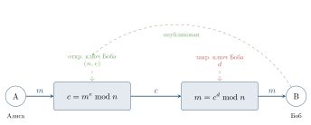
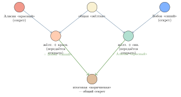
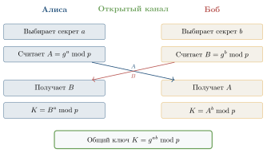

Криптосистемы RSA и Диффи–Хеллмана
В этом параграфе мы построим две настоящие, работающие сегодня схемы асимметричной криптографии. Обе появились почти в одно время — между 1976 и 1978 годами — и обе опираются на результаты предыдущего параграфа.
Криптосистема RSA
Идея была опубликована в 1978 году тремя сотрудниками Массачусетского технологического института — Рональдом Райвестом, Шамиром (Ади Шамир) и Адлеманом (Леонард Адлеман). Их фамилии и дали название системе — RSA.
Генерация ключей. Каждый пользователь, желающий получать зашифрованные сообщения, выполняет одноразовую процедуру.
Выбрать два больших случайных различных простых числа p и q (на практике — по 1024 бита каждое).
Вычислить n = p\cdot q и \varphi(n) = (p-1)(q-1).
Выбрать целое e, взаимно простое с \varphi(n) (часто берут e = 65537).
С помощью расширенного алгоритма Евклида найти d такое, что
e\cdot d \equiv 1 \,(\mathrm{mod}\,\varphi(n)).
Открытый ключ: пара (n, e) — публикуется.
Закрытый ключ: число d — хранится в секрете.
Лишние данные: числа p, q, \varphi(n) безопасно уничтожаются.
Шифрование. Алиса хочет послать сообщение m Бобу. Сообщение представлено числом из отрезка [0, n-1] (длинное сообщение разбивается на блоки). Алиса берёт открытый ключ Боба (n, e) и вычисляет:
c \;=\; m^e \bmod n.
Число c называется шифр-текстом и передаётся открыто.
Расшифрование. Боб, получив c, использует свой закрытый ключ d и вычисляет:
m' \;=\; c^d \bmod n.
Утверждается: m' = m (рис. 4.9).

Почему RSA работает: корректность
В обозначениях процедуры RSA, для любого m \in [0, n-1] выполняется
(m^e)^d \equiv m \,(\mathrm{mod}\,n).
Доказательство. Случай m = 0 тривиален: тогда 0^{ed} \equiv 0 \,(\mathrm{mod}\,n). Далее считаем 1 \le m \le n-1.
По построению e\cdot d \equiv 1 \,(\mathrm{mod}\,\varphi(n)), значит, найдётся целое k, такое что e\cdot d = 1 + k\cdot \varphi(n). Подставим:
m^{ed} = m^{1 + k\varphi(n)} = m\cdot \bigl(m^{\varphi(n)}\bigr)^k.
Случай 1. \gcd(m, n) = 1. Тогда по теореме Эйлера m^{\varphi(n)} \equiv 1 \,(\mathrm{mod}\,n), и
m^{ed} \equiv m\cdot 1^k = m \,(\mathrm{mod}\,n).
Случай 2. \gcd(m, n) > 1. Поскольку n = pq и p, q простые, это значит, что m делится либо на p, либо на q (но не на оба — иначе m \ge pq = n, чего быть не может). Рассмотрим, например, p \mid m. Тогда m \equiv 0 \,(\mathrm{mod}\,p), и обе части сравнения m^{ed} \equiv m \,(\mathrm{mod}\,p) обращаются в ноль — утверждение выполнено.
С другой стороны, \gcd(m, q) = 1, поэтому по малой теореме Ферма m^{q-1} \equiv 1 \,(\mathrm{mod}\,q). А значит, m^{(p-1)(q-1)} = m^{\varphi(n)} \equiv 1 \,(\mathrm{mod}\,q), и
m^{ed} = m\cdot \bigl(m^{\varphi(n)}\bigr)^k \equiv m\cdot 1^k = m \,(\mathrm{mod}\,q).
Получили m^{ed} \equiv m одновременно по модулям p и q. По китайской теореме об остатках (или просто потому, что разность m^{ed} - m делится и на p, и на q, а значит, на их произведение n) сравнение m^{ed} \equiv m \,(\mathrm{mod}\,n) выполнено. \square
Учебный пример (маленькие числа). Полноценный RSA использует тысячебитные числа, но для понимания работает и крошечный пример.
Пусть p = 11, q = 23. Тогда:
n = 11\cdot 23 = 253, \varphi(n) = 10\cdot 22 = 220.
Выберем e = 7. Проверим взаимную простоту: \gcd(7, 220) = 1.
Найдём d = 7^{-1} \bmod 220. Расширенным алгоритмом Евклида:
220 = 31\cdot 7 + 3,\quad 7 = 2\cdot 3 + 1.
Раскручиваем: 1 = 7 - 2\cdot 3 = 7 - 2(220 - 31\cdot 7) = 63\cdot 7 - 2\cdot 220. Значит, d = 63 (проверка: 7\cdot 63 = 441 = 2\cdot 220 + 1).
Открытый ключ: (253, 7). Закрытый ключ: d = 63.
Шифрование. Пусть m = 50. Считаем c = 50^7 \bmod 253 быстрым возведением:
50^2 = 2500 \equiv 2500 - 9\cdot 253 = 223,\qquad 50^4 \equiv 223^2 = 49\,729.
Делим 49\,729 / 253 \approx 196{,}5, 196\cdot 253 = 49\,588, остаток 141. Значит, 50^4 \equiv 141. Далее 50^7 = 50^4\cdot 50^2\cdot 50 \equiv 141\cdot 223\cdot 50 \bmod 253. Считаем: 141\cdot 223 = 31\,443 = 124\cdot 253 + 71, значит \equiv 71. Затем 71\cdot 50 = 3550 = 14\cdot 253 + 8, значит \equiv 8. Итак, c = 8.
Расшифрование. Боб считает c^d = 8^{63} \bmod 253. Вместо длинных вычислений «вручную» можно использовать малую теорему Ферма по модулям 11 и 23 раздельно, а затем китайскую теорему об остатках — именно так и поступают на практике. Ответ: 50.
Удивительный исторический парадокс: ровно та же схема была независимо открыта в 1973 году британским математиком Клиффордом Коксом, работавшим в Британском управлении правительственной связи (GCHQ). Но работа была засекречена и рассекречена только в 1997 году. К этому моменту Райвест, Шамир и Адлеман уже стали всемирно известными, основали компанию RSA Security, а Шамир получил Премию Тьюринга. Типичный пример того, как секретность тормозит развитие науки.
Почему RSA безопасен
Стойкость RSA опирается на предположение: задача факторизации n практически нерешаема при больших n.
Действительно, если злоумышленник умеет факторизовать n, он восстанавливает p, q, затем \varphi(n) = (p-1)(q-1) и наконец d = e^{-1} \bmod \varphi(n) — получит закрытый ключ. Обратное (что взлом RSA эквивалентен факторизации) также считается верным, но строго не доказано: это одна из открытых проблем в криптографии.
Заметим, что знать n и e (открытый ключ) — ещё далеко не значит знать \varphi(n). Знание \varphi(n) и знание разложения n = pq — одна и та же информация: ведь p + q = n - \varphi(n) + 1, а p - q = \sqrt{(p+q)^2 - 4n}. То есть «нахождение \varphi(n)» и «факторизация n» — задачи одинаковой сложности.
Почему нужны именно большие простые числа? Современный рекомендуемый размер n — 2048 или даже 4096 бит. Чтобы взломать 2048-битный RSA, нужно факторизовать число длиной около 617 десятичных цифр; лучший известный алгоритм потратит на это больше времени, чем существует Вселенная.
В 2020 году группе исследователей удалось факторизовать число RSA-250 (250 десятичных цифр \approx 829 бит). Заняло это около 2700 ядро-лет вычислений — то есть один компьютер с 2700 ядрами работал бы целый год. Это подтверждает, что 1024-битный RSA скоро будет «на грани», а 2048-битный — надолго безопасен.
Проверим выполнение требований из § 4.2.
Корректность — доказана теоремой выше.
Стойкость — опирается на сложность факторизации.
Эффективность — шифрование/расшифрование сводятся к возведению в степень по модулю, что мы умеем делать полиномиально (см. § 4.2).
Защита ключа — знание e, n не даёт быстрого способа найти d без факторизации.
Протокол Диффи–Хеллмана
Уитфилд Диффи и Мартин Хеллман решали несколько другую (хотя и родственную) задачу: договориться о секретном ключе по открытому каналу, — не передавая по нему ничего секретного. Их работа 1976 года так и называется: «Новые направления в криптографии».
Идея на пальцах: краски. Прежде чем вводить формулы, разберём наглядную аналогию (рис. 4.10).

Алиса и Боб условились о «жёлтой» базовой краске (известна всем). Каждый выбрал свою секретную краску (Алиса — красный, Боб — синий) и публично передал смесь «своя + жёлтая». Подслушивающий видит обе смеси, но не может разложить их обратно. А Алиса и Боб, добавив к чужой смеси свою секретную краску, приходят к одинаковому итогу: жёлт. + красн. + син.
Математическая реализация. Роль «смешивания» играет дискретное возведение в степень по модулю простого числа (рис. 4.11).
Подготовка (общедоступно): большое простое число p и целое g, 1 < g < p, выбранное так, чтобы его степени давали много различных остатков по модулю p (то есть g порождает большую подгруппу в \mathbb{Z}_{p}^*).
Алиса выбирает случайный секрет a \in [1, p-2] и посылает Бобу A = g^a \bmod p.
Боб выбирает случайный секрет b \in [1, p-2] и посылает Алисе B = g^b \bmod p.
Алиса вычисляет общий ключ: K = B^a \bmod p.
Боб вычисляет общий ключ: K = A^b \bmod p.
Результат. Алиса и Боб получили один и тот же ключ
K = g^{ab} \bmod p,
который никогда не передавался по каналу связи.

Учебный пример.
Пусть p = 23, g = 5.
Алиса выбирает a = 6, отправляет A = 5^6 \bmod 23. Считая последовательно по таблице степеней пятёрки:
5^1\equiv 5,\;5^2\equiv 2,\;5^3\equiv 10,\;5^4\equiv 4,\;5^5\equiv 20,\;5^6\equiv 8,
получаем A = 8.
Боб выбирает b = 15, отправляет B = 5^{15} \bmod 23. Продолжая таблицу:
5^7\equiv 17,\;5^8\equiv 16,\;5^9\equiv 11,\;5^{10}\equiv 9,\;5^{11}\equiv 22,
5^{12}\equiv 18,\;5^{13}\equiv 21,\;5^{14}\equiv 13,\;5^{15}\equiv 19,
получаем B = 19.
Алиса вычисляет общий ключ K = B^a = 19^6 \bmod 23. Замечая, что 19 \equiv -4 \,(\mathrm{mod}\,23), имеем (-4)^6 = 4^6 = 4096 = 178\cdot 23 + 2, значит, K = 2.
Боб вычисляет K = A^b = 8^{15} \bmod 23. Но 8 = 5^6, значит, 8^{15} = 5^{90}. По малой теореме Ферма 5^{22} \equiv 1 \,(\mathrm{mod}\,23), а 90 = 4\cdot 22 + 2, поэтому 5^{90} \equiv 5^2 = 2 \,(\mathrm{mod}\,23). Получаем K = 2.
Согласование удалось: общий ключ K = 2. И это притом, что числа a = 6 и b = 15 никогда не передавались по каналу!
Безопасность Диффи–Хеллмана. Чтобы подслушивающий, видя g, p, A, B, мог найти общий ключ K = g^{ab}, ему нужно сначала восстановить хотя бы один из секретов a или b, — то есть решить уравнение
g^a \equiv A \,(\mathrm{mod}\,p)
относительно a при известных g, A, p. Эта задача называется задачей дискретного логарифма (в группе \mathbb{Z}_{p}^*).
Для всех известных классических алгоритмов задача дискретного логарифма по модулю большого простого — субэкспоненциальная (примерно той же сложности, что и факторизация). Однако по модулю эллиптической кривой — значительно сложнее, и поэтому современные мессенджеры обычно используют вариант Диффи–Хеллмана не по модулю числа, а на эллиптических кривых (ECDH). Идея та же.
Атака «человек посередине»
И RSA, и Диффи–Хеллман в чистом виде уязвимы к одной атаке. Представим, что между Алисой и Бобом «вклинился» злоумышленник — Мэллори (Man-in-the-Middle) (рис. 4.12).

Мэллори перехватывает A от Алисы, заменяет на свой A' и пересылает Бобу. С Бобом он устанавливает один ключ, с Алисой — другой. Затем расшифровывает каждое сообщение, читает (и при желании меняет), снова шифрует и передаёт дальше. Внешне Алиса и Боб ничего не замечают.
Защита. Нужна аутентификация — способ убедиться, что собеседник действительно тот, за кого себя выдаёт. В реальных системах это решается через цифровые сертификаты и электронную цифровую подпись. О них — следующий параграф.
В системе RSA дано p = 7, q = 13, e = 5. Найдите n, \varphi(n) и d.
Используя ключ из задачи 1, зашифруйте сообщение m = 9.
В Диффи–Хеллмане положите p = 17, g = 3, a = 5, b = 7. Найдите A, B и общий ключ K.
Почему в RSA нельзя брать e = 1? А e = \varphi(n) - 1?
Что произойдёт, если в RSA Алиса случайно использует m \ge n?
* Объясните, как именно атака «человек посередине» работает в случае RSA (не Диффи–Хеллмана).
* Что вы посоветуете человеку, который хочет «шифровать всё своими силами без сертификатов»? Какие угрозы он не учитывает?